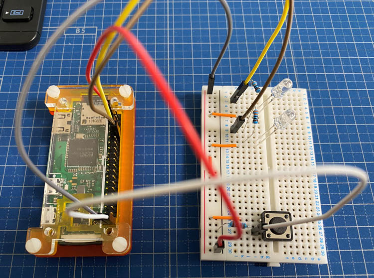
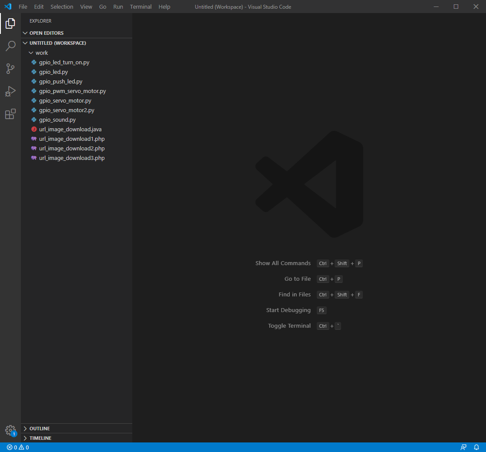
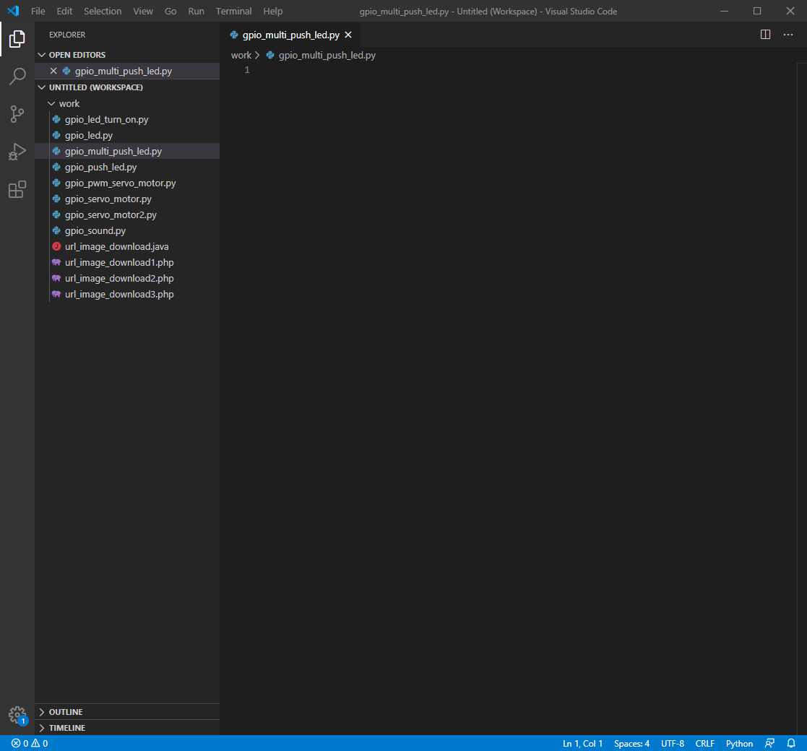
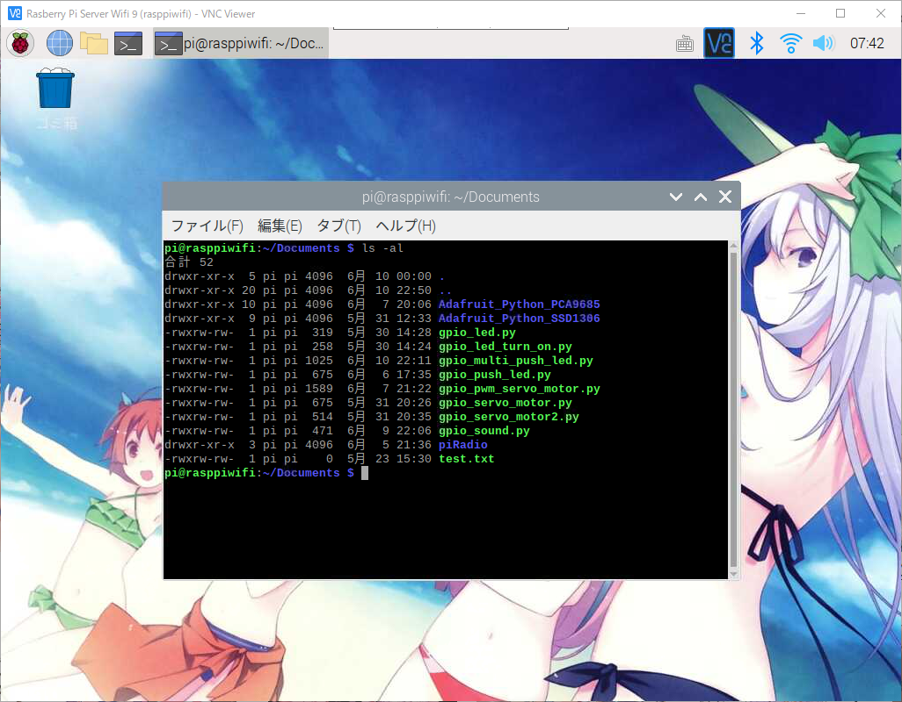
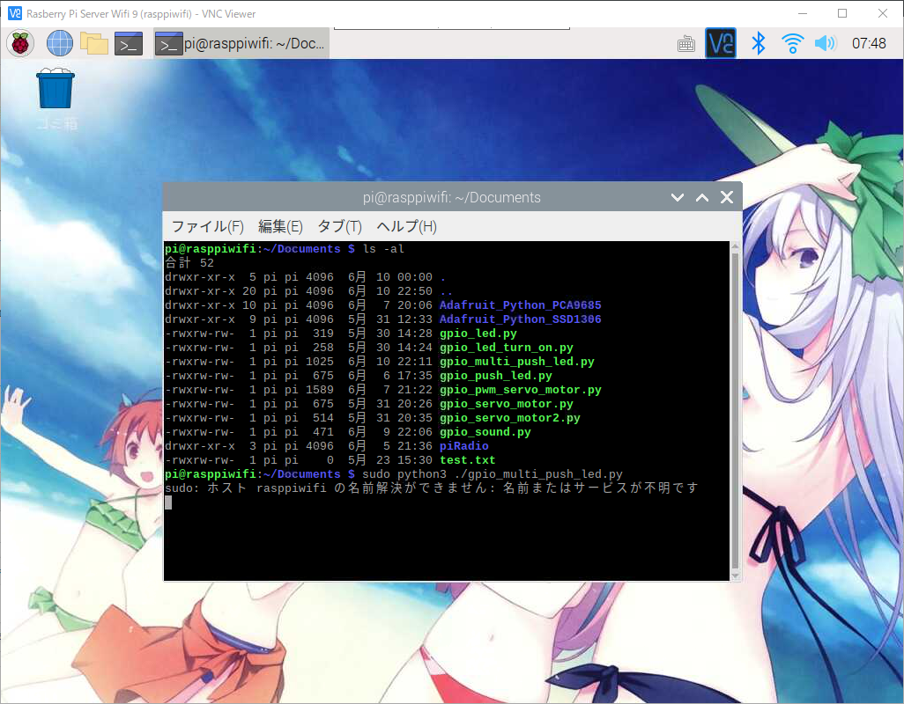

라즈베리파이 GPIO 파이썬을 이용 PUSH버튼으로 LED점등
라즈베리파이에서 GPIO 파이썬을 이용해서 PUSH버튼으로 LED점등 #2
안녕하세요.
이번에 소개할 내용은 라즈베리파이에서 GPIO, 파이썬을 이용해서 PUSH버튼으로 LED점등하기 #2 입니다.
우리가 일상적으로 집에 들어왔을경우 버튼을 누르고 거실의 등을 키는것과 같은 역활로
버튼을 누르게 되면 LED 2개가 순차적으로 점등이 되는것을 만들어 보도록 하겠습니다.
준비물
- 라즈베리파이 OS, 파이썬 설치가 완료된 상태
- 점퍼케이블 암/수 5줄, 수컷 3줄
- 플레이트 보드
- 저항 330Ω 2개, 10KΩ 1개
- LED전구 2개
- 푸쉬버튼

색깔별 점퍼케이블의 연결순서는 아래의 표를 참고해 주세요.
| Color | Pi GPIO Pin | Notes |
|---|---|---|
| Red | 1 | 3.3V |
| White | 40 | 21(SP1_SCLK) |
| Brown | 10 | 15(UART_RXD) |
| Yellow | 8 | 14(UART_TXD) |
| Gray | 39 | GND |
GPIO핀에 대한 자세한 내용을 원하시는 분은 아래의 링크를 들어가셔서 참고해 주세요.
라즈베리파이에서 GPIO를 사용하기전 알아두어야 할 사항
위와같이 라즈베리파이와 플레이트 보드의 구성을 모두 마치셨으면
이제 본격적인 코딩을 해야만 합니다.
Visual Studio Code(비주얼 스튜디오 코드)를 실행해 주시기 바랍니다.

실행을 하셨으면 파일명을 gpio_multi_push_led.py로 추가를 해주시기 바랍니다.

간단한 예제로 버튼을 누르면 첫번째 LED가 5초간 켜지고 꺼진뒤 2번째 LED가 켜지고 꺼지는 소스를 작성 하겠습니다.
아래의 코드를 입력해 주세요.
1 | import time |
작성하신 소스를 라즈베리파이에 넣고 실행을 하기위해
소스파일을 라즈베리파이의 임의의 폴더에 올려주시기 바랍니다.
그리고 라즈베리파이를 VNC를 이용해 접속후 터미널을 실행해 주세요.

라즈베리파이의 리스트 목록을 보시면 gpio_multi_push_led.py 파일명으로 파일이 올라가 있는걸 확인할수 있습니다.
이제 명령어로 버튼을 눌렀을경우 순차적으로 LED가 켜지고 꺼지는지 확인 해보도록 하겠습니다.
아래의 명령어를 입력해 주세요.
1 | # 파이썬 2.x버전대를 이용하실경우 |
1 | # 파이썬 3.x버전대를 이용하실경우 |
저의 경우는 3.x버전대를 이용하기에 3.x버전대의 명령어로 실행을 하겠습니다.

위와같이 실행이 된 상태에서 버튼을 눌러보시면 첫번째 LED가 켜지고 5초뒤에 두번째 LED가 켜지는것을 확인하실수 있습니다.
만일 LED가 켜키지 않을경우 배선이 맞게 되어있는지 LED를 (+,-)가 맞게 꼽혀있는지 확인해 주세요.
프로그램을 종료를 하실경우에는 Ctrl + C키를 눌러주시면 프로그램이 종료 됩니다.
이렇게해서 푸쉬버튼을 이용한 멀티 LED 켜고 끄기가 끝났습니다.
다음에도 더 다양한 방식을 소개하도록 하겠습니다.